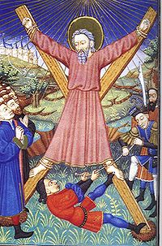

| Андрей Первозванный Материал из Википедии — свободной энциклопедии |
|  Мученичество апостола Андрея |
Апо́стол Андре́й (греч. Ανδρέας , лат. Andreas), больше известный как Андрей Первозванный —
один из апостолов (учеников) Иисуса Христа, брат Симона-Петра, персонаж Нового Завета.
Евангелия Упомянут в списках апостолов в Евангелии от Матфея (10:2), от Марка (3:18), от Луки (Лк 6:14), а также в Деяниях Апостолов (1:13). Андрей был родным братом апостола Петра, рыбак, как и Пётр, родился в Вифсаиде, городе на северном берегу Галилейского озера. Андрей стал первым[1] из призванных учеников Христа, в связи с чем этого апостола часто называют Первозванным. Согласно Евангелию от Матфея (4:18-19) и от Марка (1:16-18) призвание Андрея и Петра состоялось близ Галилейского озера, апостол Иоанн в Евангелии от Иоанна описывает призвание Андрея, состоявшееся около Иордана сразу после крещения Иисуса (1:35-40). Согласно этому повествованию апостол Андрей был вначале учеником Иоанна Крестителя. На страницах Евангелия от Иоанна Андрей появляется ещё дважды — он ведёт диалог с Иисусом о хлебах и рыбе перед чудом насыщения пяти тысяч людей (6:8-9) и вместе с апостолом Филиппом приводит к Иисусу Еллинов (12:20-22). Существует апокрифический текст Деяния Андрея, созданный, по общепринятой версии, в III веке. |
ЖитиеВ житии святого апостола Андрея Первозванного упоминается, что Андрей и его брат Симон (будущий св. Пётр) были галилейскими рыбарями, родившимися и росшими в Вифсаиде (городе на берегу Генисаретского озера); отца их звали Ионою.[2] Повзрослев, братья перебрались в Капернаум, где обзавелись собственным домом и продолжали заниматься рыбной ловлей.Ещё в юности Андрей решил посвятить себя служению Богу. Сохраняя целомудрие, он отказался вступить в брак. Услышав о том, что на реке Иордан Иоанн Предтеча проповедует о приходе Мессии и призывает к покаянию, Андрей оставил всё и отправился к нему. Скоро юноша стал ближайшим учеником Иоанна Крестителя. Евангелисты Матфей и Иоанн по-разному описывают встречу Андрея с Иисусом. В Евангелии от Иоанна говорится о том, что Андрей впервые увидел Спасителя, когда святой Предтеча указал на идущего Иисуса Христа и произнёс: «Вот Агнец Божий». Услышав это, Андрей вместе с другим учеником Предтечи, имя которого евангелист не приводит, оставил Крестителя и последовал за Христом. Потом Андрей нашёл своего брата Симона Петра и тоже привёл его к Иисусу.[3] Матфей же повествует о том, как Спаситель встретил Андрея и его брата Симона Петра на берегу Генисаретского озера, где братья ловили рыбу, забрасывая сети в воду. Иисус обратился к ним со словами: «Идите за мною, и Я сделаю вас ловцами человеков». И они последовали за ним, оставив свои сети. Писание доносит до нас весьма скудные сведения об апостоле Андрее, но его жизнеописание говорит само за себя. В Евангелии от Иоанна сказано о том, что во время чуда умножения хлебов Андрей указал на мальчика, имевшего «пять хлебов ячменных и две рыбки» (Ин. 6:8—9). Он же показал Спасителя язычникам, пришедшим в Иерусалим для поклонения истинному Богу (Ин. 12:20—22). По свидетельству евангелиста Марка, святой Андрей был одним из четырёх учеников Иисуса, которым Он на горе Елеонской открыл судьбы мира (Мк. 13:3). Святой Андрей назван Первозванным, потому что был призван первым из апостолов и учеников Иисуса Христа. До последнего дня земного пути Спасителя следовал за ним его Первозванный апостол. После крестной гибели Го́спода святой Андрей стал свидетелем Воскресения и Вознесения Христова. В день Пятидесятницы (то есть через пятьдесят дней после Воскресения Иисуса) в Иерусалиме произошло чудо сошествия Святого Духа в виде огненных языков на апостолов. Так, вдохновляемые Духом Божиим, апостолы получили дар исцелять, пророчествовать и способность говорить на разных наречиях о великих делах Господа. Двенадцать учеников Иисуса разделили между собой страны, куда они должны были нести евангельскую проповедь, обращая язычников ко Христу. Святому Андрею выпали по жребию обширные земли Вифинии и Пропонтиды с городами Халкидон и Византия, также земли Фракии и Македонии, простирающиеся до Чёрного моря и Дуная, кроме того, земли Скифии и Фессалии, Эллады и Ахайи, города Аминс, Трапезунд, Ираклия и Амастрида. Святой Андрей прошёл эти города и страны, неся язычникам евангельскую проповедь. Первым поприщем его апостольского служения стало побережье Чёрного моря, которое в те времена называли «Эвксинским Понтом» («Гостеприимным морем»). Почти всюду, где оказывался апостол, власти встречали его жестокими гонениями, он претерпевал множество скорбей и страданий. Но, подкрепляемый силой своей веры, святой Андрей «с услаждением» переносил все бедствия во имя Христа. Особенно много мучений пришлось встретить Первозванному апостолу в городе Синопе, где язычники подвергли его жестоким пыткам. Но, как говорит предание, «благодатью своего Учителя и Спасителя святой Андрей снова оказался здоровым и целым от ран»[4]. Продолжая свой проповеднический путь, апостол прошёл через города Неокесарию и Самосаты, через страну Аланы, через земли Абасков и Зигов. По преданию, язычники зиги сначала не приняли евангельскую проповедь святого Андрея и даже хотели убить апостола, но, дивясь его кротости и подвижничеству, оставили своё намерение. Пройдя через Босфорское царство, он предпринял морское путешествие во фракийский город Византию.[5] Апостол первым проповедовал там учение Спасителя в будущем центре восточного христианства, где святой Андрей и основал Церковь. Он рукоположил в сан византийского епископа Стахия, одного из 70 апостолов Христа, о котором Павел упоминает в Послании к римлянам (16:9). Также святой назначил пресвитеров церкви, «чтобы они учили народ и совершали таинства»[6]. Житие апостола повествует о нескольких случаях воскрешения им усопших:[7][8] * в городе Амасеев апостол Андрей воскресил мальчика по имени Египтий, умершего от лихорадки, по просьбе отца мальчика Деметрия. * в Никомидии во время погребального шествия апостол воскресил мальчика, погибшего от того, что его тело было разорвано собаками. * в Фессалониках по просьбе одного из жителей города апостол публично воскресил мальчика, который умер от удушения. * разгневанный проповедями апостола Андрея проконсул Вирин послал воинов, чтобы они силой привели апостола к нему. Один из воинов упал замертво, как только выхватил меч, после чего апостол молитвой воскресил его. # Проконсул Вирин приказал подвергнуть пыткам апостола на стадионе, выпустив на арену по очереди вепря, быка и леопарда. Но звери не тронули апостола, в то время как леопард набросился на сына проконсула и удавил его. После долгой молитвы апостол воскресил сына Вирина. # также в Фессалониках апостол воскресил маленького мальчика, умершего от укуса змеи. # в городе Патры апостол Андрей проповедовал в доме проконсула Лисбия. Бывшая наложница проконсула Трофима последовала учению апостола и ушла от своего мужа. Муж Трофимы пришёл к жене проконсула Калисте и оклеветал свою жену, обвинив её в возобновлении связи с проконсулом. По приказу Калисты Трофиму насильно поместили в дом терпимости для надругательства, но Трофима так сильно молилась, что все мужчины, пытавшиеся к ней прикоснуться, погибали, после чего одного из них она воскресила. Жена проконсула отправилась в баню со своим любовником, где они оба скончались. По просьбе кормилицы Калисты апостол Андрей воскресил умершую, после чего Лисбий и его жена уверовали во Христа. # в городе Патры во время проповеди апостола Андрея волной на берег выбросило утопленника, которого апостол воскресил своей молитвой. Это был Филопатр, сын Сострата, жителя Македонии, который плыл на корабле в Патры с целью ознакомиться с новым учением, но его унесло волной с корабля во время бури. Филопатр обратился с просьбой к апостолу воскресить его друзей и слуг, также унесённых с корабля в море. Когда апостол Андрей помолился, то на берег волной вынесло ещё 39 человек, и толпа, окружавшая апостола, обратилась к нему с просьбой об их воскрешении. Апостол попросил сложить тела в одно место и своей молитвой воскресил всех погибших. # в городе Синоп апостол Андрей по просьбе женщины воскресил её мужа, найденного в яме убитым. # в городе Ацкури (современная Грузия) по молитве апостола воскрес умерший, и это чудо подвигло жителей города принять Святое крещение[9] |
Предание о служении Андрея Первозванного на территории будущей РусиОдной из самых спорных биографических деталей апостола является посещение им территории будущей Руси.Евсевий Кесарийский в первой половине IV в., ссылаясь на не дошедшее до нас сочинение Оригена, говорит о служении Андрея в Скифии[10]. Ориген, согласно Евсевию, утверждал, что для определения направления своей миссионерской деятельности 12 апостолов бросили жребий. Так Петру выпало проповедничество в Риме, Матфею — в Палестине, Марку — в Египте, Иоанну — в Малой Азии, Фоме — в Парфии, а Андрею — в Фракии и Скифии. Однако уже по поводу этого свидетельства расходятся мнения церковных историков. Так А. Гарнак оставлял открытым вопрос о том, насколько приведённая Евсевием цитата представляет буквальную выдержку из Оригена[11]. Некоторые учёные утверждали, что известие об апостоле Андрее принадлежит самому Евсевию и современному ему церковному преданию, а А. В. Карташёв склонялся к традиционному мнению [12]. Последующие церковные писатели — Досифей Тирский, Епифаний Кирпский (IV век), Евхерий Лионский (V век), Никита Пафлагон (IX—X) и другие по своему дополняют это предание. Таким образом маршрут апостола пролегал «через всю Вифинию, всю Фракию и скифов… потом достиг великого города Севаста… где находится крепость Аспар и река Фасис… у которой обитают внутренние эфиопы» (то есть, согласно этим авторам, апостол достиг примерно нынешней Абхазии (Фасис обычно соотносится с Риони). [13] Между Иверией и Скифией Андрей посетил, как утверждается, Боспор, Феодосию и Херсонес. Однако в большинстве вариантов легенды о бросании жребия Скифия вообще не упоминается [14]. Также ни в одной из древнейших записей легенды не упоминается путешествий апостолов по Северному Причерноморью или по Днепру. [14]. А св. Григорий Богослов (IV век) писал, что Андрею жребий выпал на Индию [14]. Как отмечает известный церковный историк, профессор, обер-прокурор Святейшего Синода А. В. Карташёв « в VIII, IX и последующих столетиях накопившийся веками матерьял в форме апокрифических и церковных сказаний, кратких известий и посеянных всюду теми и другими местных преданий, послужил источником к составлению новых „деяний“, „похвал“ и „житий“ апостолов. Здесь миссионерская деятельность ап. Андрея распадается на целых три проповеднических путешествия, скопированных с путешествий ап. Павла, причём Первозванный апостол уже с полной определённостью проходится через Скифию европейскую и по северному и по западному побережью Чёрного моря проходит до Византии, где поставляет первого епископа для этого города — Стахия [12]. » В это же время (VIII—IX века) монах Епифаний составляет рассказ об апостоле Андрее. В этом рассказе упоминается о «железном жезле с изображением животворящего креста, на который апостол всегда опирался». Неподалёку от Никеи в Вифинии «блаженный ап. Андрей, низвергнув гнусную статую Артемиды, поставил там животворящее изображение спасительного Креста». Далее к востоку, в Пафлагонии «он избрал место молитвы, удобное для устроения жертвенника, и оствятил его, воздвигнув знамение животворящего креста». Из этого рассказа, отмечает А. В. Карташёв, ведут своё начало крест и жезл, фигурирующие в двух версиях русского сказания [12]. Предание о жребии апостолов было известно на Руси с момента появления здесь христианства. В 1051 году о ней пишет киевский митрополит Иларион в «Слове о законе и благодати». Также предание было внесено в «Изборник Святослава 1076 года». Но в них предание о жребии апостолов не связывается с крещением Руси. Так митрополит Иларион писал: «Хвалит же хвалебным гласом римская страна Петра и Павла… Асия и Эфес, и Патмос — Иоанна Богослова. Индия — Фому, Египет — Марка…Похвалим же и мы… великое и дивное сотворившего, нашего учителя и наставника, великого князя земли нашей Владимира…» [15]. Более того, первый список «Повести временных лет» — так называемый Древнейший свод 1039 года, а также Начальный свод 1095 года и «Чтение о Борисе и Глебе» Нестора Летописца прямо заявляют, что на Русь апостолы «не ходили» и что они в наших землях «не быша» [14]. Но уже с 1116 года сын Всеволода Ярославича — Владимир Мономах приказал игумену Выдубицкого монастыря Сильвестру внести в «Повесть временных лет» русский вариант легенды об апостольской миссии Андрея Первозванного. Так с того времени рассказы о посещении апостолом земли русской непременно включаются во все последующие летописные списки [16]. Так появился рассказ о путешествии апостола Андрея из Крыма в Рим через Ладогу. Согласно этой версии о служении апостола в Причерноморье: «А Днепр втечёт в Понетьское море жерелом; еже море словет Руское, по немуже учил святый Оньдрей, брат Петров» (Стлб. 7), — далее рассказывает о том, что по прибытии в Корсунь Андрей узнал, что неподалёку находится устье Днепра, и, решив отправиться в Рим, поднялся вверх по Днепру. Остановившись на ночлег на холмах, на которых впоследствии был построен Киев, апостол, по утверждению летописца, сказал бывшим с ним ученикам: « Видите ли горы сия? Яко на сих горах возсияет благодать Божия, имать град великий быти и церкви многи Бог въздвигнути имать. » По преданию апостол поднялся на горы, благословил их и водрузил крест.[17] Из Киева апостол прибыл в Новгород, где удивлялся тому, что местные жители любят, моясь в банях, бить себя «молодыми прутьями», обливаться квасом и студёною водой. Об этом апостол рассказывал ученикам Иисуса в Риме, чем очень их удивил. В древнейших списках и вариантах этой легенды нет никаких-либо упоминаний об успехах проповеди Андрея Первозванного [18]. В связи с этим профессор Московской духовной академии Е. Е. Голубинский спрашивал: неужели апостол приходил в наши земли только для того, чтобы увидеть русские обычаи пользования банями [19]. Профессор А. В. Карташёв отмечает: « У русского автора-южанина в рассказе о новгородских банях очевидно была и определённая, не особенно высокая цель. Так прекрасно возвеличив свой родной Киев, он, по русскому обычаю — трунить над всяким, кто не нашей деревни, решил выставить новгородцев пред апостолами в самом смешном виде. Новгородцы так это и поняли, потому что, в ответ на киевскую редакцию повести, они создали свою собственную, в которой, не отвергая прославления Киева и умалчивая совершенно о банях, уверяют, что ап. Андрей «во пределы великого сего Новаграда отходит вниз по Волхову и ту жезл свой погрузи мало в землю и оттоле место оно прозвася Грузино… Чудотворный жезл этот „из дерева незнаемого“ хранился, по свидетельству жития св. Михаила Клопского, в его время (1537 год) в Андреевской церкви села Грузина.» [20] » Так эта легенда начала обрастать всё большим числом деталей [19]. Различные средневековые источники сообщают о дальнейшем пути святого Андрея в Новгород, где он воздвигнул крест около нынешнего села Грузино на берегу Волхова, к Ладожскому озеру и далее до острова Валаам, где он будто бы установил каменный крест и истребил капища богов Велеса и Перуна, обратив в христианство языческих жрецов[21]. Оттуда, как считается, апостол направился в Рим через Польшу (польское средневековое предание о принятии крещения от Андрея Первозванного также существует)[источник не указан 224 дня]. Стоит отметить, что факт пребывания апостола Андрея на территории будущей Руси ставили под сомнения даже православные церковные историки. Среди них: митрополит Платон (Левшин), архиепископ Филарет (Гумилевский), академик, профессор МДА Е. Е. Голубинский [19], профессор А. В. Карташёв и другие. Известный старец псковского Елеазарова монастыря Филофей (ок. 1465—1542) писал о русской земле: « сё есть пустыня, понеже святые веры пусти беша, и иже божественнии апостоли в них не проповедаша, но последи всех просветися на них благодать Божия [22]. » В одном сборнике XVI века читаем: « а не бывшу никоторому апостолу в русской земли, но поистине русскому языку милость Божия открыся [22]. » Преподобный Иосиф Волоколамский (1440—1515) в своём «Просветителе» ставил даже вопрос: почему ап. Андрей не проповедовал христианства в русской земле? и отвечал так: « возбранен бысть от Св. Духа. Его же судьбы бездна многа и сего ради суть сиа несказанна [22]. » Однако в церковной среде распространено и другое мнение. Некоторые православные историки склонны считать предание об апостоле Андрее правдивым. Так историк церкви, митрополит Макарий (Булгаков) (1816—1882) замечает по этому поводу: « Предание о благовестии святого апостола Андрея даже во внутреннейших областях нашего отечества не заключает в себе ничего невероятного, и нет основания отвергать его безусловно или принимать за одну идею[23]. » Мученичество за веруПосле апостольского служения в землях будущей Руси, святой Андрей посетил Рим, откуда возвратился в греческую страну Эпир. Как и в начале пути, апостол прошёл через Фракию, где снова и снова проповедовал учение Иисуса. Достигнув Пелопоннеса, Первозванный вошёл в ахайский город Патры. В этом месте святому Андрею суждено было закончить свой земной путь, приняв мученическую смерть.По преданию, в Патрах он остановился у одного уважаемого человека по имени Сосия. Святой Андрей избавил его от тяжёлой болезни, после чего обратил в христианство жителей всего города. Правителем в Патрах был в то время римский проконсул по имени Егеат Антипат. Его жена Максимилла уверовала во Христа после того, как апостол исцелил её от тяжкого недуга. Брата Егеата, Стратоклия, а также множество других горожан святой Андрей излечил возложением рук от различных болезней. Однако сам правитель не принял проповедь апостола. Для всех последователей Спасителя наступили тяжёлые времена. Начались кровавые преследования христиан, которые называли нероновскими гонениями (по имени римского императора Нерона). Христиан несправедливо обвинили в поджоге Рима. Предание говорит, что город был подожжён по приказу самого Нерона, который хотел полюбоваться зрелищем того, как гибнет столица великой империи. В то же время в Риме распяли брата святого Андрея — святого апостола Петра. Егеат Антипат устроил гонения на христиан в Патрах. Верующих во Христа он принуждал приносить жертвы языческим идолам. Святой Андрей выступил в защиту христиан. Предание подробно говорит о встрече апостола с правителем Патр. «Ты разрушитель храмов богов, Андрей, старающийся вовлечь народ в безумную секту, которую повелители империи решились истребить»[24], — начал Егеат. Святой Андрей, твёрдый в своём подвижничестве, отвечал, что римские императоры не знают того, что Сын Божий, сойдя на землю ради спасения людского рода, называл языческих идолов нечистыми бесами, враждебными человеку, которые учат людей прогневлять Бога и отвращать Его от себя, чтобы Он не слышал их. Апостол предрекал, что когда Бог, прогневавшись, отвернётся от человеческого рода, бесы будут пленять и обольщать людей до тех пор, пока души их не выйдут из тела, не имея ничего другого, кроме грехов. Егеат, угрожая святому Андрею казнью, напомнил, что когда Христос проповедовал своё учение, римляне распяли его на кресте. Святой апостол в ответ благовествовал о таинстве креста, о том, что Бог из любви к человеку претерпел крестные му́ки. Апостол поведал будущим судьям своим, что Христос знал и о времени своих страданий, и о своём Воскресении на третий день. Андрей говорил Егеату о том, как Спаситель, сидя с учениками на последней вечере, возвестил о своём предателе, говоря о будущем как о прошедшем, и как Он добровольно пошёл на то место, где его должны были предать в руки римлян. Но жестокосердный Егеат не внял увещеваниям святого апостола о необходимости поклониться истинному Богу и отвернуться от ложных. Он лишь удивился, как такой мудрый человек, как Андрей, может называть таинством казнь злодеев, как может он исповедовать веру в того, кто распят на кресте — всё равно каким образом, добровольно или невольно. Ведь в те времена казнь через распятие считалась самой позорной, ей подвергались только рабы и самые презренные и преступные люди. Апостол смиренно попросил Егеата выслушать, что такое таинство креста и почему столь важен жертвенный путь Спасителя, чтобы его собеседнику открылась сокровенная суть этой казни и он, познав истину, уверовал, а уверовав, обрёл бы свою душу. Странно было слышать язычнику Егеату слова Андрея об обретении души. «Не хочешь ли ты убедить меня, что я мёртв?» — вопрошал он. Разве погибла душа, чтобы вновь обретать её через неизвестную веру? С сомнением и недоверием слушал он о том, как первый человек привнёс в мир смерть, вкусив запретный плод от древа познания добра и зла, а искупительная жертва Иисуса отверзла человеческому роду источники жизни, столь долго закрытые, ибо смерть должна быть уничтожена через древо страдания, крестное дерево, на котором пострадал Христос. И, как первый человек был создан от чистой земли, так надлежало, чтобы от чистой девы родился Христос, совершенный человек и сын Божий. Святой апостол говорил Егеату о том, что Спаситель пришёл в мир для того, чтобы вновь возвратить людям утерянную вечную жизнь. И если Адам согрешил, дерзнув протянуть руку к древу познания добра и зла, Спаситель искупил сей грех, простерев длани по краям креста и за сладость запретного плода вкусив горькой желчи. Но с пренебрежением отнёсся Егеат к проповеди святого апостола. Он сказал, что эти пустые слова могут слушать лишь глупцы. Жестокий правитель вновь угрожал святому Андрею побоями и казнью, если тот не откажется от своей веры и не согласится принести жертвы языческим богам. Издеваясь над апостолом, Егеат говорил, что распнёт его на том самом кресте, который он так прославляет, чтобы проповедник тоже понёс на себе тайну креста. Но апостол не боялся казни, он с уверенностью и бесстрашием отвечал угрожавшему ему, что смерть праведных чиста, а страшна лишь смерть грешников. И снова начал он проповедовать Егеату. Теперь он рассказывал ему о таинстве причастия — таинстве жертвы истинному Богу, которая состоит не в курении фимиама, не в крови жертвенных животных, но в закланном на крестном алтаре непорочном Агнце, чья плоть и кровь служат пищею и питьём множеству верующих, Он же остаётся «живым, чистым и нескверным». Не мог понять Егеат слова и смысл этого учения. Он спрашивал у святого, как же так может быть, что тот, кто умерщвлён и употреблён людьми в пищу, остаётся живым и целым. И тогда святой Андрей предложил жестокому правителю стать его учеником, чтобы узнать ответы на все свои вопросы. Егеат пришёл в ярость и стал угрожать святому Андрею, что муками выпытает у него правду об этом учении. Но апостол лишь смиренно повторял, что познать истину можно, лишь уверовав, что Христос, Сын Божий, распятый римлянами есть истинный Бог. «Веруй с любовью, — призывал святой Андрей своего строгого судью, — ибо только так можно познать тайны Христа». Тогда Егеат, разгневавшись, повелел бросить апостола в темницу. Толпы людей, верных своему учителю, стекались к месту заключения святого Андрея. Они были готовы встать на его защиту, убить ненавистного всему городу Егеата и освободить апостола из заточения. Однако святой удерживал их своей вдохновенной проповедью. Он просил их не производить «возмущения во имя Иисуса Христа». Напоминал о том, как Спаситель, будучи предан на смерть, показал великое терпение. Он не прекословил своим палачам, не вырывался из их рук. Святой Андрей призывал своих последователей к спокойствию и молчанию, увещевал их вести себя подобно воинам Го́спода, которые умеют страдать, не жалуясь и не ропща. Он просил собравшихся не препятствовать выпавшим на его долю испытаниям, — ведь не земных мук нужно бояться, а тех, которые не имеют конца. Устрашения же и угрозы человеческие подобны дыму: явившись, они внезапно исчезают. Святой Андрей провёл всю ночь, благовествуя людям, собравшимся у места его заточения. Он учил их не бояться временных страданий: они легко переносятся, если незначительны, если же они велики, то оканчиваются со смертью телесной, но её ли бояться тем, кто уверовал в бессмертие души. С любовью обращаясь ко слушавшим его в ту ночь, святой Андрей призывал их быть готовыми через временные скорби перейти к вечной радости, в вечное царство Христово. Утром стража повела апостола на суд Егеата Антипата. Предание говорит в подробностях о том, как проходил этот суд. Когда к Егеату привели святого Андрея, правитель спросил апостола, решился ли он оставить своё безумие и не проповедовать больше Христа, чтобы веселиться вместе с Егеатом в этой жизни, а не идти добровольно на мучения и огонь. Но святой Андрей не прекратил апостольского служения даже перед лицом смерти, он с твёрдостью нёс евангельскую проповедь своим судьям и палачам. Апостол ответил Егеату, что сможет разделить с ним лишь ту радость, которую даёт отвержение идолов и вера во Христа. Правитель, видя твёрдость и непоколебимость апостола, снова начал угрожать ему, обвиняя в том, что он посеял смуту и раздор в ахайских городах, что люди, обольщённые его речами, покинули храмы и прогневали богов. Егеат говорил, что святой Андрей отказом от своего учения мог бы вернуть народ к поклонению богам, к принесению угодных богам жертв и к восстановлению прежнего порядка; если же апостол не согласится поддержать Егеата, то будет распят на кресте, как и его учитель. Святой Андрей ответил своему жестокому судье, что он не боится даже самых страшных мучений, ведь чем более тяжкие страдания он претерпит за Спасителя, тем более будет угоден Господу, ибо, как служитель Христа, желает крестной смерти. Апостол снова пытался обратить Егеата к истинной вере, с любовью и кротостью он повторял правителю, что печалится о своих страданиях меньше, чем о погибели грешной души Егеата. Апостол просил своего судью, чтобы тот не приумножал собственных мучений и не распалял для себя адского огня. Разгневанный Егеат приказал распять апостола. Когда слуги вели святого Андрея на казнь, со всех концов города собралось множество народу. Люди, не понимая, в чём согрешил этот праведный человек и за что его ведут на распятие, хотели остановить слуг и освободить святого Андрея. Но сам апостол умолял народ не препятствовать его страданиям, он шёл радостно, не переставая проповедовать. Издали заметив крест, поставленный для него (крест этот был сделан косым, в виде буквы «Х»), апостол благословил его, обратившись к орудию своей казни со словами приветствия и благословения. Святой Андрей громко восклицал о том, что идёт на крестную смерть с радостью и дерзновением. «О крест, освящённый моим Господом и Владыкою, — вскричал он, — приветствую тебя, образ ужаса, ты, после того как Он умер на тебе, сделался знаком радости и любви! О вселюбезный крест, всегда желал я умереть в твоих объятиях! Итак, приими меня, ибо чрез тебя я хочу быть представленным к Тому, Который тобою искупил меня!» Подойдя к месту казни, святой Андрей отдал свою одежду слугам; слуги же, подняв мученика на крест, привязали его за руки и за ноги цепями, так как Егеат приказал не прибивать апостола гвоздями, чтобы он дольше страдал. Вокруг места казни собралось множество народа; святой Андрей, вися на кресте, укреплял своей проповедью веровавших во Христа и призывал их терпеть временные мучения, уча, что никакое мучение ничего не стоит по сравнению с будущим воздаянием. Два дня проповедовал апостол с креста. На второй день множество людей отправилось к дому Егеата, требуя снять с креста этого святого человека, который даже перед лицом смерти не перестаёт учить истине. Сила народного гнева испугала правителя. Вместе с людьми он отправился к месту казни, чтобы освободить апостола. Увидев Егеата, святой Андрей обратился к нему с креста со словами о том, что не желает быть снятым, ибо уже видит своего Царя, уже поклоняется Ему, уже стоит перед Ним. Апостол говорил, что печалится лишь об участи своего жестокого судьи, потому что того ожидает вечная погибель. Когда слуги приблизились, чтобы отвязать святого от креста, их руки не повиновались им, словно онемевшие. Множество людей из толпы подходили и пытались освободить апостола, но неведомая сила останавливала их. Апостол Андрей громко молил Господа принять его дух с миром, ибо время настало, чтобы прийти к Господу и видеть его. Когда святой говорил это, воссиял вокруг него небесный свет, словно молния. Он был настолько ярким, что невозможно было человеку смотреть на него. Этот небесный огонь обнимал святого в продолжение получаса, и апостол испустил дух в сиянии света, чтобы предстать Господу. Так закончился земной путь Святого Всехвального апостола Андрея Первозванного. Узнав о смерти святого, Максимилла, благочестивая жена Егеата, с великой честью сняла с креста его тело, и, умастив благовониями, положила в гроб, который был предназначен для неё самой. Егеат, разгневавшись на народ, замыслил отомстить восставшим, а Максимиллу, жену свою, хотел оклеветать перед императором. Но, по преданию, когда он помышлял об этом, нашёл на него бес — и, мучимый им, Егеат умер посреди города. Когда об этом сообщили брату Егеата, Стратоклию, веровавшему в учение Христа, тот повелел совершить над Егеатом погребальный обряд. Однако благочестивый Стратоклий не пытался присвоить ничего из принадлежавшего Егеату имущества; напротив, он просил Господа избавить его от сокровищ брата, ведь они несут на себе грех того, кто, любя лишь своё богатство, осмелился предать смерти апостола Христа. Косой крест, на котором апостол Андрей принял мученическую кончину, с тех пор называется Андреевским крестом. Распятие это считается совершившимся около 70-го года. |
Политика византийской церквиПо мнению профессора, А. В. Карташёва с помощью развития легенды об Андрее решала две задачи:1. Оградить свою независимость от притязаний Рима и доказать свою равнозначность Риму (Андрей был старшим братом апостола Петра); 2. Обеспечить себе господство над всеми по возможности церквами Востока. « Отсюда можно заключить, что Византия охотно поддерживала сказания о проповеди ап. Андрея в тех странах, где они существовали (Армения, Грузия) и даже старалась привить подобные предания в странах северных (Моравия, Россия), на которые простиралось её влияние. О том, что византийцы при случае даже прямо внушали русским верование о проповеди на Руси ап. Андрея, мы имеем документальное свидетельство. Это - письмо к русскому князю Всеволоду Ярославичу, написанное от лица императора Михаила Дуки (1072-1077) его секретарём, знаменитым учёным своего времени, Михаилом Пселлом, с целью сватовства за брата императора дочери Всеволода. Одним из аргументов к теснейшему союзу двух дворов служит здесь следующий: "Духовные книги и достоверные истории научают меня, что наши государства оба имеют один некий источник и корень, и что одно и то же спасительное слово распространено в обоих, одни и те же самовидцы божественного таинства и его вестники провозгласили в них слово Евангелия" [25] |
ПочитаниеПри императоре Константине Великом, мощи святого апостола Андрея были торжественно перенесены в Константинополь и положены в храме Святых Апостолов рядом с мощами святого евангелиста Луки и ученика апостола Павла — Тимофея, апостола от семидесяти.Апостол Андрей почитается основателем и небесным покровителем Константинопольской православной церкви. По легенде, в VIII веке мощи апостола Андрея были перевезены в Шотландию монахом Регулусом и помещены в кафедральный собор Сент-Эндрюса, города, который получил своё имя в честь апостола и стал церковной столицей Шотландского королевства. По другой версии они (возможно, частично) были перевезены в XIII веке в Италию, в г. Амальфи. В Православной церкви память апостола (по юлианскому календарю): 30 июня (Собор двенадцати апостолов) и 30 ноября; в Католической церкви и Православных церквах, придерживающихся григорианского календаря: 30 июня и 30 ноября. На Руси особый культ апостола Андрея Первозванного получил распространение с 1080-х годов. Первая церковь в честь апостола Андрея была построена в Киеве в 1086 году трудами великого князя Всеволода Ярославича, сына Ярослава Мудрого. Апостол Андрей — святой покровитель России, Шотландии, Румынии, Греции, Сицилии, Амальфи; а также моряков и рыбаков. Картины с изображением святого Андрея создавались многими великими живописцами, в том числе Мурильо, Эль Греко, Сурбараном. В 1698 году российским царём Петром I учреждена первая (и затем остававшаяся высшей) награда России — Орден Св. Андрея Первозванного. В 1998 году этот орден в России был возрождён. 26 декабря 1906 года в английском Бирмингеме открыт футбольный стадион «Сент-Эндрюс», названный в честь святого Андрея. |
Литература* Бурега В. Освещение миссионерской деятельности апостола Андрея Первозванного в российской церковно-исторической науке / Доклад прочитан на конференции «Первозванный апостол» в Варне (Болгария) 31 октября 2006 г. * Карташёв А. В. Был ли апостол Андрей Первозванный на Руси? / Очерки по истории русской церкви. Том I. Репринтное воспроизведение. YMCA-PRESS. Париж. 1959. — М.: Наука, 1991. — С.40-51 * Кузьмин А. Г. Сказание об апостоле Андрее и его место в начальной летописи // Летописи и хроники: 1973. М., 1974. С. 37–47 * Мюллер Л. Древнерусское сказание о хождении апостола Андрея в Киев и в Новгород // Летописи и хроники: 1973. М., 1974. С. 48–63; * Мурьянов М. Ф. Апостол Андрей Первозванный в Повести временных лет // Палестинский сборник. Вып. 19. Л., 1969. С. 172; * Свенцицкая И. С. Легенды об апостоле Андрее. Деяния апостола Андрея и мученичество апостола Андрея / Судьбы апостолов: мифы и реальность. — М.: Вече, 2006. — С.139-166 * Чичуров И. С. «Хождение апостола Андрея» в византийской и древнерусской церковно-идеологической традиции // Церковь, общество и государство в феодальной России. М., 1990. С. 7–23. |
Примечания↑ Показывать компактно1. ↑ В хронологическом смысле. 2. ↑ В Евангелии от Иоанна (1:42) Иисус говорит будущему св. Петру: «ты — Симон, сын Ионин; ты наречёшься Кифа, что́ значит: „камень“ (Пётр)». 3. ↑ Согласно Евангелию от Иоанна (1:41), именно от Андрея св. Пётр впервые узнал о том, что нашли Мессию (Христа). 4. ↑ Деяния св. апостола Андрея Первозванного 5. ↑ Будущий Константинополь. 6. ↑ Деяния св. апостола Андрея Первозванного 7. ↑ Житіе святаго Апостола Андрея Первозваннаго (Переводъ съ грузинской рукописи Давидгареджійскаго монастыря.) 8. ↑ Книга о чудесах блаженного апостола Андрея Георгия Флоренция Григория, епископа Турского 9. ↑ Грузия-Религия 10. ↑ цит. по: Архимандрит Макарий (Веретенников), И. С. Чичуров Христианство на территории исторической России до ее крещения. I. Предание об апостоле Андрее Первозванном 11. ↑ A. Harnack Gesch. d. altch Litter. Leipz. 1893. S. 344. Цит. по: Карташёв А. В. Очерки по истории русской церкви. Том I. Репринтное воспроизведение. YMCA-PRESS. Париж. 1959. — М.: Наука, 1991. — С.42 12. ↑ 1 2 3 Карташёв А. В. Очерки по истории русской церкви. Том I. Репринтное воспроизведение. YMCA-PRESS. Париж. 1959. — М.: Наука, 1991. — С.43 13. ↑ Румынская православная церковь официально признаёт крещение Андреем провинции Малая Скифия (примерно соответствует нынешней Добрудже) Официальный сайт Румынской Православной Церкви (англ.) 14 ↑ 1 2 3 4 Дулуман Е. К., Глушак А. С. Введение христианства на Руси: легенды, события, факты. — Симферополь: Таврия, 1988. — С.21 15↑ Слово о законе и благодати 16 ↑ Дулуман Е. К., Глушак А. С. Введение христианства на Руси: легенды, события, факты. — Симферополь: Таврия, 1988. — С.23 17 ↑ В XIII в. на месте, где это, по преданию, произошло, была сооружена церковь во имя Воздвижения Честного Креста, заменённая в середине XVIII столетия храмом архитектора Растрелли в честь самого Первозванного апостола. 18 ↑ Дулуман Е. К., Глушак А. С. Введение христианства на Руси: легенды, события, факты. — Симферополь: Таврия, 1988. — С.17 19 ↑ 1 2 3 Дулуман Е. К., Глушак А. С. Введение христианства на Руси: легенды, события, факты. — Симферополь: Таврия, 1988. — С.18 20 ↑ Карташёв А. В. Очерки по истории русской церкви. Том I. Репринтное воспроизведение. YMCA-PRESS. Париж. 1959. — М.: Наука, 1991. — С.46. 21 ↑ Житие апостола Андрея 22 ↑ 1 2 3 цит. по: Карташёв А. В. Очерки по истории русской церкви. Том I. Репринтное воспроизведение. YMCA-PRESS. Париж. 1959. — М.: Наука, 1991. — С.49 23 ↑ Макарий. История Русской церкви. Том 1. Отдел 1. Глава 1. 24 ↑ Деяния св. апостола Андрея Первозванного 25 ↑ Карташёв А. В. Очерки по истории русской церкви. Том I. Репринтное воспроизведение. YMCA-PRESS. Париж. 1959. — М.: Наука, 1991. — С.46. 26 ↑ «Корабль-церковь совершит рейд по НСО» «Деловой Петербург» ISSN 1606-1829 (Online) 31 июля 2007 года |